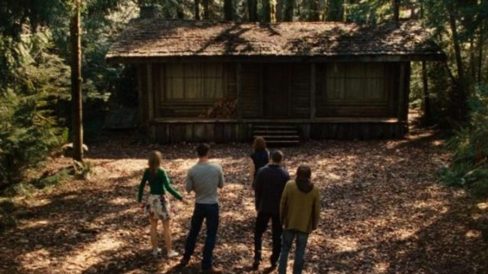

Cabin in the Woods
Our Rating: 9.5/10
Overview
The Cabin in the Woods is a 2012 American horror comedy film directed by Drew Goddard in his directorial debut, produced by Joss Whedon, and written by Whedon and Goddard. The film stars Kristen Connolly, Chris Hemsworth, Anna Hutchison, Fran Kranz, Jesse Williams, Richard Jenkins, and Bradley Whitford. The plot follows a group of college students who retreat to a remote forest cabin where they fall victim to backwoods zombies, and the technicians who manipulate events from an underground facility.
Goddard and Whedon, having worked together previously on Buffy the Vampire Slayer and Angel, wrote the screenplay in three days, describing it as an attempt to "revitalize" the slasher film genre and as a critical satire on torture porn. The special effects, monster costumes, special makeup, and prosthetic makeup for the movie were done by veteran horror film actress Heather Langenkamp, her husband David LeRoy Anderson, and their company AFX Studio. Filming took place in Vancouver, British Columbia from March to May 2009 on an estimated budget of $30 million.
The film was originally slated for release on February 5, 2010, by Metro-Goldwyn-Mayer and United Artists, but was indefinitely shelved due to financial difficulties. In 2011, Lionsgate picked up the distribution rights. The film premiered on March 9, 2012, at the South by Southwest film festival in Austin, Texas and was released in the United States on April 13, 2012, grossing over $66 million worldwide.
Plot
In an underground laboratory, engineers Sitterson and Hadley discuss plans for a mysterious ritual, after a similar operation in Stockholm has just ended in failure. American college students Dana, Holden, Marty, Jules, and Curt are spending their weekend at a seemingly deserted cabin in the forest. From the lab, Sitterson and Hadley remotely control the cabin and manipulate the students by intoxicating them with mind-altering drugs that have effects such as hindering rational thinking and increasing libido. The lab departments take bets on what kind of monster will attack the students and discuss the failures of international operations. In the cabin's cellar, the group finds many bizarre objects, including the diary of Patience Buckner, a cabin resident abused by her sadistic family. Dana recites incantations from the diary and inadvertently summons the zombified Buckner family.
Hadley releases pheromones to induce Curt and Jules to have sex outside. They are attacked by the zombies and Jules is decapitated while Curt escapes to alert the group. Marty discovers concealed surveillance equipment in his room before being dragged off by a zombie. The lab workers learn that the rite in Japan has also failed, meaning that the American rite is "humanity's last hope". Curt, Holden, and Dana attempt to escape in their RV, but Sitterson triggers a tunnel collapse to block them. Curt attempts to jump a ravine on his motorcycle to seek help on the other side, but crashes into a force field and falls to his death. Holden and Dana realize that their experience is staged and retreat to the RV. As they drive back to the cabin, Holden is stabbed by a zombie, and the RV is driven into a lake. Dana swims ashore and is also attacked. The lab employees, seeing that Dana is the only survivor, celebrate the success of the rite, but are interrupted by a phone call from "The Director" pointing out that Marty is still alive.
Marty rescues Dana and takes her to a hidden elevator he discovered under a grave. They descend into the lab and discover a large collection of monsters of various types locked in cages. Dana correlates them with the objects in the cabin's cellar and realizes that the objects determine which monsters are released. Cornered by security personnel, Dana and Marty trigger a "Purge" button and release all the monsters, which wreak havoc and slaughter most of the staff. Dana and Marty flee the carnage and discover an ancient temple, where they are confronted by The Director. She explains that worldwide annual rituals of human sacrifice are held to appease the Ancient Ones, a group of cruel subterranean deities. Each region has its own ritual, and the American ritual involves the sacrifice of five slasher film archetypes: the whore (Jules), the athlete (Curt), the scholar (Holden), the fool (Marty), and the virgin (Dana). The order of the killings is arbitrary as long as the whore dies first and the virgin dies last or survives. The Director urges Dana to kill Marty to complete the ritual and spare humanity. Dana is suddenly attacked by a werewolf, while Patience Buckner, one of the zombies, kills The Director. Deciding that humanity is not worth saving, Dana and Marty share a joint while awaiting their fate. The temple floor collapses and a giant hand emerges, destroying the facility and the cabin itself.

Cast
- Kristen Connolly as Dana Polk
- Chris Hemsworth as Curt Vaughan
- Anna Hutchison as Jules Louden
- Fran Kranz as Marty Mikalski
- Jesse Williams as Holden McCrea
- Richard Jenkins as Gary Sitterson
- Bradley Whitford as Steve Hadley
- Brian J. White as Daniel Truman
- Amy Acker as Wendy Lin
- Sigourney Weaver as The Director
- Tim de Zarn as Mordecai
- Jodelle Ferland as Patience Buckner
- Matt Drake as Judah Buckner
- Dan Payne as Mathew Buckner
- Dan Shea as Father Buckner
- Maya Massar as Mother Buckner
- Tom Lenk as Ronald the Intern
- Greg Zach as Fornicus, Lord of Bondage and Pain
- Ayden Watson as Johnny Harper